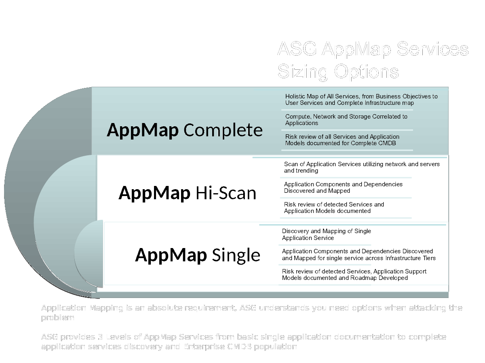
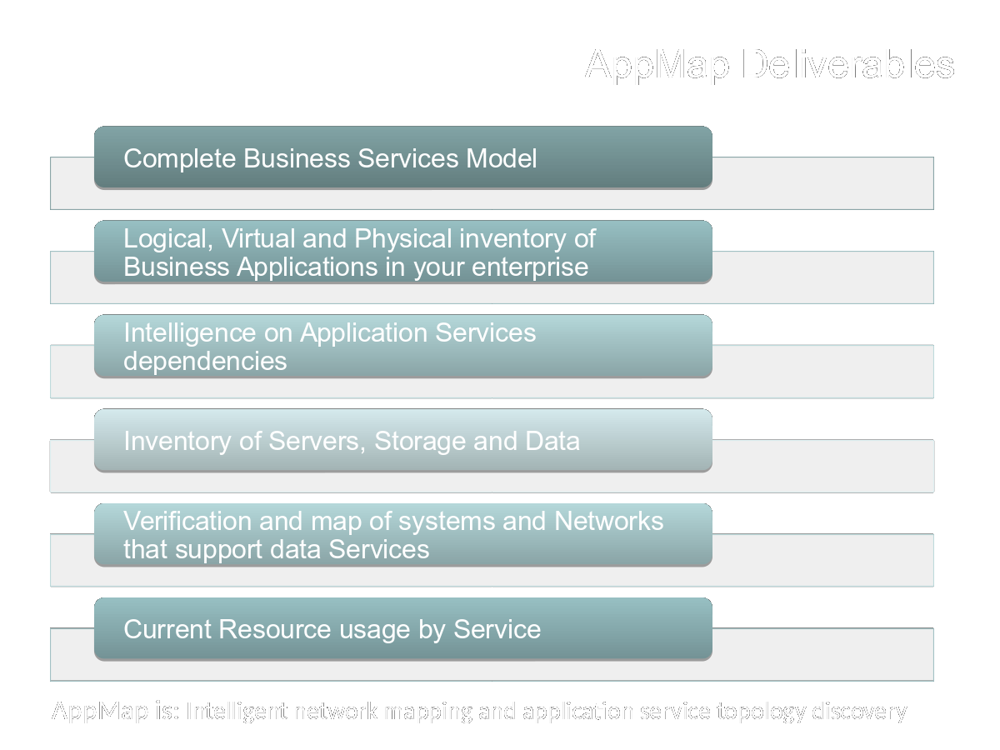

Starting Your IT Organization's journey to Cloud IT
Scott Harney <sharney@virtual.com>
10/25/2016
Twitter: @sharney
Linkedin: https://www.linkedin.com/in/scottharney
Intro
Who am I?

Who am I?
- Consulting Engineer for ASG
- Provide pre-sales support
- Also post-sales delivery PS and consulting
- Previous practitioner experience in customer roles
- Storage and backup
- Unix/linux engineer
- Network engineer
- Live and work exclusively in LA
Who is ASG?
- Leading National systems integrator since 1981
- Headquarters in Denver, CO. has maintained a presence in LA throughout company history
- Provides Consulting services supporting the business of IT
How ASG Views IT
IT Transformation is not just about technology
It's always about the business
But How?
What ways do IT functions support the business
3 ways
- Help make $
- Save $
- Prevent loss of $
The problem is it spends 90% of its time on the latter two bullets. Traditional IT is focused on safety and saving money on scarce IT resources
Cloud IT is About Going Faster
- Faster is a competitive advantage for many business
- Ability to pivot
- Flexibility to experiment
- BUs can buy what they need and use immediately
- Still can be just as safe if not more so
Cloud is Not a technology
Well, not entirely anyway. It's also very much about people and process. It is a different consumption model for IT resources. It is much more aligned with applications than traditional IT which may not have deep awareness of business apps running on infrastructure
Cloud Economics are Different
- Rent vs buy for public
- Abundant resources vs limited
- Does not reward traditional it app architectures
- Can be hard/pricey to move data out of cloud or across vendors
Cloud App Architectures are Different
- Apps are stateless
- Distributed computing model
- Databases are "eventually consistent"
- There are different database types
It's All So Different, But…
Rule 11
(11) Every old idea will be proposed again with a different name and a different presentation, regardless of whether it works. (11a) (corollary). See rule 6a.Quote rule 11 rfc 1925Corollary 6a
(6a) (corollary). It is always possible to add another level of indirection.
https://tools.ietf.org/html/rfc1925 (published 4/1/1996)
Don't fear the cloud
The technology world is not leaving you behind. There is a very high rate of change and some of these "new" technologies may or may not become relevant to your career and your business.
So you should be running towards what I'm describing as Cloud IT technologies and methods and getting familiar with them now.
Practical Steps For the IT Practitioner
What should the IT practitioner start doing to prepare for a transition to Cloud IT?
Get a Cloud Account
Get an AWS, Azure, or GCP account. They all have very low cost and/or free tiers of usage. Start with the basic infrastructure elements.
When you get your first bill, start to look at how items are charged and begin to understand why some things are charged more than others.
Learn Linux
Cloud native and Linux go hand in hand. It's time now to start focusing your attention on Linux skills.
Learn git
Essential skill today for the practitioner. Learn git workflows and how to collaborate with others. Understand the value of cheap branching and simultaneous work with multiple teammates.
There are numerous web based resources. Reach out to me and I'll point you to some.
Learn Automation Tools

The investment may take longer than brute force initially but you're playing a long game
Learn Automation Tools
- Chef
- Puppet
- Ansible
- Salt
Get Out of Your Comfort Zone
If you feel out of depth and this is hard, you're (probably) doing it right. Make the time investment
What should an IT Leader do?
What steps can an IT leader take to prepare for Cloud IT
Talk to the Business
Get IT and business leaders talking. Understand what they want out if IT and how they use IT. If they use cloud find out what for and why.
If the answer is that IT can't respond to needs fast enough so they are going around IT, that's an important signal.
Foster Innovation
- Give your IT team room to learn and change
- Encourage education
- Recognize that processes may have to change
- And incentives
- Make better risk calculations
Find Peers
Get out into the community. Find peer customers. Find out if they are embracing new modes of operating and how their experience is going.
Find Trusted Advisors
Talk to your technology partners. Ask them probing questions. What are they asking you? How can they help you start this journey
Themes to listen for
- Faster
- Automated
- Simplified ops
- Self provisioning
- Visibility
- Multi-tenant
ASG Can Help
Examples include our Application Mapping Service and Cloud Roadmap Service


ASG and Tintri
ASG partners with Tintri. Tintri's VM-aware storage is an example of a product that provides many of the attributes to ready enterprise customers to being moving to cloud-like IT.
How?
Thank you
Questions?